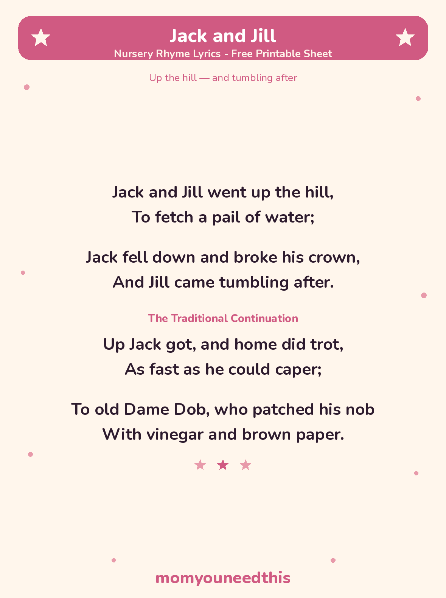

Jack and Jill The Classic Hill-and-Tumble Rhyme, With Lyrics and a Free Printable
Jack and Jill is the famous nursery rhyme about two children who climb a hill to fetch a pail of water — and tumble back down again. The full lyrics are below, including the traditional verse where Dame Dob patches Jack's head, plus a free printable lyrics sheet.
Last updated: October 25, 2026
Quick Answer
Jack and Jill is a traditional story nursery rhyme about fetching water from the top of a hill. Jack falls and bumps his crown — his head — and Jill tumbles after him. The lyrics are in full on this page, with the traditional Dame Dob verse and a free printable lyrics sheet.
At a Glance
- Rhyme: Jack and Jill
- Type: Story rhyme
- Best for: Ages 2–5
- Lyrics: The 2 famous verses, plus the traditional continuation
- Printable: 1 lyrics sheet
- Tradition: In print since about 1765
- Cost: Free — print at home
🎵 Jack and Jill Lyrics
These are the two verses everyone knows. Many printings run them together as one four-line verse; they are shown as two short verses here, the way they are usually sung to small children.
Jack and Jill went up the hill,
To fetch a pail of water;
Jack fell down and broke his crown,
And Jill came tumbling after.
The Traditional Continuation
Up Jack got, and home did trot,
As fast as he could caper;
To old Dame Dob, who patched his nob
With vinegar and brown paper.

✂️ Download Your Free Jack and Jill Lyrics Sheet
The famous verses and the Dame Dob continuation on one sheet, in big, clear type.
⬇️ Download Free Lyrics Sheet 🖨️ Print🎁 Free printable for ages 2–5
🪣 About This Rhyme
“Broke his crown” simply means Jack bumped the crown of his head — the top of it. His cure belongs to the rhyme's own time: vinegar and brown paper really was a household remedy for bumps and bruises in the 1700s and 1800s, soaked and pressed on like a cold cloth. Today a bumped head gets a cuddle, something cold, and a grown-up keeping an eye on it — but in the rhyme, Dame Dob's patch is the sign that Jack is fine and the story ends well.
Nobody knows for sure where this story came from, and the many theories about kings and taxes are just that — theories. What is solid is its age: it was already in print by about 1765, and children have been climbing that hill, on the page and in the playground, ever since. The tumbling is the fun of it — as long as real-life tumbles stay pretend, onto something soft.
🖨️ How to Use This Rhyme
- Sing it together. Point up on “up the hill” and let your voice tumble down on the fall — the drop in the tune is the part toddlers wait for.
- Act it out — gently. Climb a pretend hill across the room, then do a slow, pretend tumble onto cushions or a rug. Pretend tumbles only: the rhyme's fall is fun, a real one is not.
- Print the lyrics sheet. Prop it where you sing, or add it to a nursery rhyme folder so your child can find Jack and Jill's page themselves.
- Let your child “read” it back. Children memorize this one fast. Let them hold the sheet and perform both parts — climbing voice, tumbling voice and all.
🎵 More Rhymes & Fun
🎵 Nursery Rhymes
The full collection of classic rhymes to sing together, each with its own printable lyrics sheet. Browse all nursery rhymes.
🌙 Wee Willie Winkie
The gentle bedtime rhyme about the little figure who checks that every child is in bed. Sing Wee Willie Winkie.
👑 The Grand Old Duke of York
The marching action rhyme — stand tall, crouch down, and freeze halfway up. March with the Duke.
🎨 Free Coloring Pages
Hundreds of free coloring sheets to print for every age. See the coloring pages.
❓ Jack and Jill FAQ
What are the lyrics to Jack and Jill?
The full Jack and Jill nursery rhyme lyrics are in the lyrics section above: the two famous verses about going up the hill and tumbling after, plus the traditional continuation where Dame Dob patches Jack's head. They are also on the free printable lyrics sheet.
What age is Jack and Jill for?
It suits ages 2 to 5. It is short, it has a tiny story with a beginning and an end, and the up-and-down movement makes it one of the first rhymes toddlers can act out as well as sing.
What does “broke his crown” mean?
It means Jack bumped the crown of his head — the top of it — when he fell. He is not badly hurt in the story: he trots straight home, and Dame Dob patches his head with vinegar and brown paper, the old-fashioned remedy of the rhyme's time.
Can I print the lyrics sheet?
Yes — the lyrics sheet is free to print at home with no signup. It carries the same verses as this page, including the traditional continuation, in big, clear type.